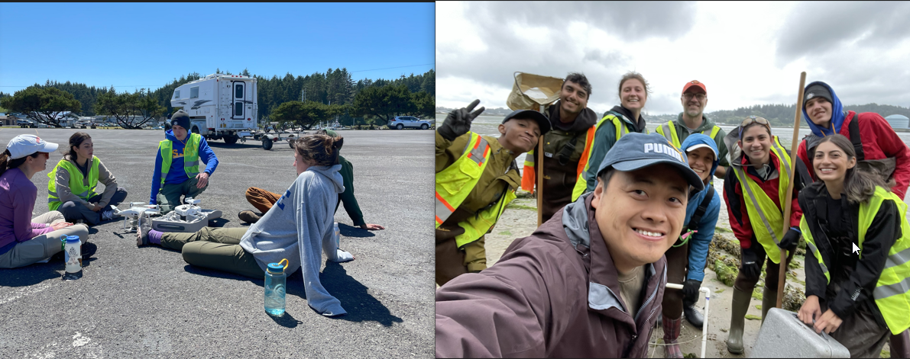

NSF Build and Broaden 2024 Summer Coastal Drone Fieldwork Application
The NSF Build and Broaden 2024 summer fieldwork application is now open! This unique program invites students to participate in a four-week coastal mapping fieldwork adventure spanning Bodega Bay, Tomales Bay, Oregon, and Moss Landing. This initiative, supported by the National Science Foundation (NSF), offers an invaluable opportunity for selected students to engage directly with the environment and cutting-edge research. Learn more about the multi-year seagrass mapping project [here]

Participants will receive a $2,000 NSF stipend and work alongside GeoFly Lab faculty and lab members. The program includes two weeks of fieldwork focused on collecting data in intertidal areas, exploring seagrass habitats, and investigating diseases. This hands-on experience will be complemented by two weeks of data processing, utilizing drone remote sensing and Geographic Information Systems (GIS) for high-resolution data analysis. Scheduled during the July or August low tide series, this program promises an immersive research experience.

Please view a [storymap] and a [video] created by a previous student cohort, offering insights into what the summer fieldwork entails.

Eligibility:
Current students at SJSU or Bay Area colleges, at the junior or senior undergraduate level, or enrolled in graduate programs.
Timeline: The fieldwork is scheduled to coincide with the 2024 West Coast summer low tide series. Potential fieldwork dates are as follows: * 2024 June 21-25 * 2024 July 20-24 * 2024 August 1-5
Application Due: April 24th, 2024
Application Process: Interested candidates are invited to apply by submitting a resume and a one-page cover letter as a single PDF file. Your cover letter should emphasize your interest in coastal mapping and any relevant experiences. Applications must be submitted through the provided Google Form [link].
We strongly encourage applications from students affiliated with historically marginalized or disadvantaged groups, aiming to support five students in 2024. This includes, but is not limited to, Black, African American, Hispanic, Latino, Indigenous, Native American, Native Alaskan, Asian American, Native Hawaiian, Pacific Islander, other people of color, religious minorities, LGBTQIA+ community, individuals with disabilities, rural residents, and those impacted by poverty or inequality.
Don't miss this chance to contribute to important environmental research while gaining hands-on experience and a stipend. Apply now to be part of the NSF Build and Broaden 2024 summer fieldwork!